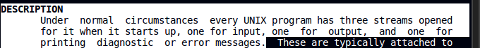
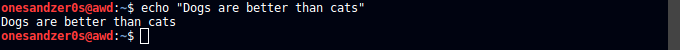
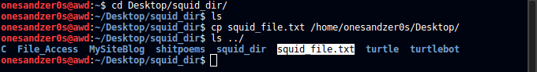
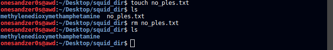
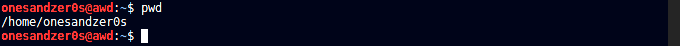
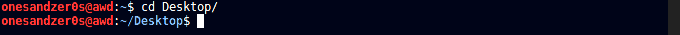
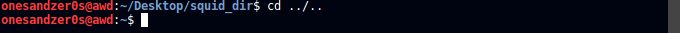
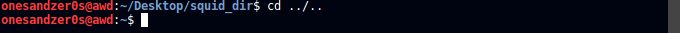

Lesson 3: Standard I/O streams
4-Out-2017
standard input | standard output | standard error
Let's read about this first so we understand what we're dealing with. This man page explains this very well

echo | > | >> | < | grep | pipe
This lesson will be a bit more complex and therefore more attention and pratice will be adviced because it's fairly easy to forget about this commands in 2 days if they're are not worked constantly for a while. Take it from me...
So, input is when we give something to the program or in this case the echo command, and the output will be what the command gives you back. Here we pass a string and echo simply display it as standard output.
echo

But what if we want to use the output of a program and pass it to another as input? This is called redirection and can be done with redirection operators.
>
Here, we redirect the output of echo to write in a file. It does a bit more then that as we'll see in a second.

>>

As you can see they did the same thing, so what's the catch?
There is a solid difference between the two. > redirects and overwrites the file.However, >> redirects but appends the output at the end of the file.


<
< takes the output from the file and passes it to the program on the right. Now, we haven't talked about grep yet but all you need to know is that we taking whats inside of the file and pass it to grep, as input, which then searchs for those words.


grep and pipe
Like we saw previously, grep allows us to search for patterns like words, for example. | (pipe) sends the output from one program as input to another program. Here, we use ps which displays information on active processes and we pass that output, with pipe |, to grep which then finds our search word terminal
Learning Bash
Lesson two: Dealing with files
touch | vim and nano | cat | cp | mv | rm
Let's start with creating files, text files.
Bash comes with vim and nano pre-installed. nano is better for beginners, vim has the fame of being very dificult to learn, but its probably the most powerful text editor. So, we are going to create a file with touch, edit it with nano and use cat to see the content inside of it.
touch

nano
CTRL-O + ENTER + CTRL-X to write and quit

cat
Now we use cat to see whats inside of the without having to open it.

Now that we created a file, we will now learn how to move it or remove it.
cp
cp is for copying files or directories.

mv
mv is used to move but also to rename files or directories.
I made a new directory and moved our squid_file.txt into it.

Here I renamed the file that we copied into the Desktop directory.

rm
rm removes files or directories.
Removing a file.

Removing a directory. Notice the --recursive, -r option we need to use it when we want to remove a directory.

Learning Bash
Lesson one: Navigation
So let's learn how to navigate on the command line and learn some basic commands.
ls | pwd | cd | mkdir | clear and tput reset
Once you open the terminal, you will see your username followed by the pc name (the one that identifies you on a network etc) and finally ~$
which means the terminal is ready to receive your input and also that you're on your home directory (~).
ls
Let's shine some light into our terminal with ls.
ls will list all the files in a directory, it can do it with many more information but that will come later.

pwd
So now we have directories like the Desktop Pictures etc, but before we jump into one of these folders let's learn about pwd, which basicaly prints the working directory

Now that we know where we are located with a little more detail than just home, let's go to our Desktop. Keep in mind that using the terminal will be much like using windows, except you have much more power with you.
cd
To change directory we just put our cd command followed by the directory we want to go.

Going backwards in directories.
 

Using just cd will takes us straight to home.

Also, if any errors pop-up, make sure to read them carefully and most importantly stay calm. Bash is not wrong, you are. To minimize typing errors, use Tab for autocompletion. It's very handy.
Ok, now were in our Desktop folder. But if you just installed linux you probably wont have anything there and you can check it with ls.
mkdir
This time to shed some light, we will create a folder with mkdir and the folder name right next to it.

Now let's go into the folder that we just created with cd

To end this lesson, use clear to clear your terminal. However, clear will basically just scroll down, if you really want to clean all of the terminal output use tput reset.